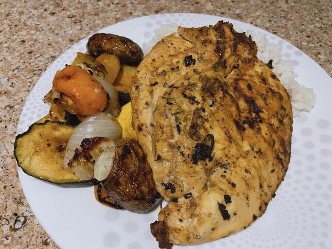

Laotian Grilled Chicken

Ingredients
- 3 tablespoons soy sauce
- 1 tablespoon grapeseed oil, mince garlic and thyme each
- 1 ½ teaspoons ground cumin and sweet paprika each
- ½ teaspoon freshly ground black pepper, dried oregano and granulated onion each
- ¼ teaspoon ground coriander, ground turmeric and dry mustard powder each
- 1 pinch ground cinnamon, boneless, skinless chicken breast, butterflied
- ½ lime, juiced
Steps
- Combine soy sauce, grapeseed oil, cumin, paprika, garlic, thyme, pepper, oregano, granulated onion, coriander, turmeric, mustard powder, and cinnamon in a large resealable plastic bag. Add chicken, coat with the marinade, squeeze out excess air, and seal the bag. Refrigerate for 8 to 24 hours.
- Preheat an outdoor grill to 500 degrees F (260 degrees C) and lightly oil the grate.
- Add lime juice to the marinade mixture while the grill is heating up.
- Cook chicken on the preheated grill until no longer pink in the center and the juices run clear, turning once, 7 to 8 minutes total.